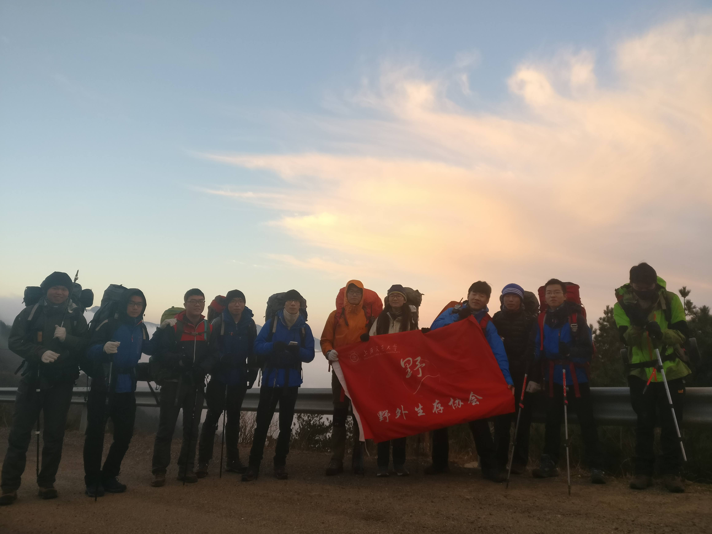
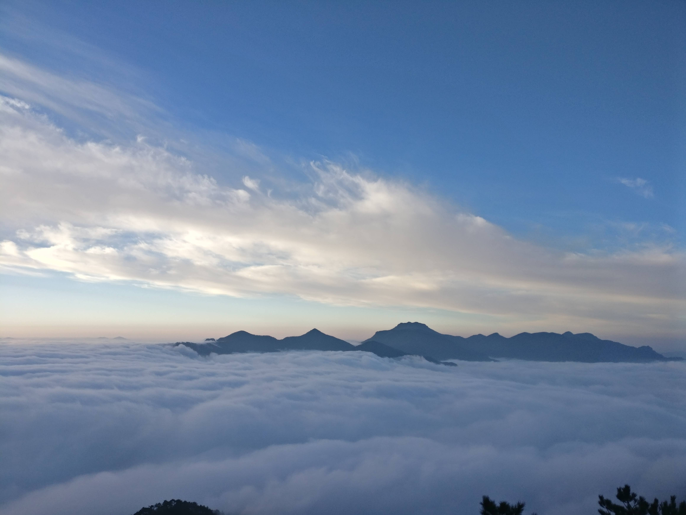
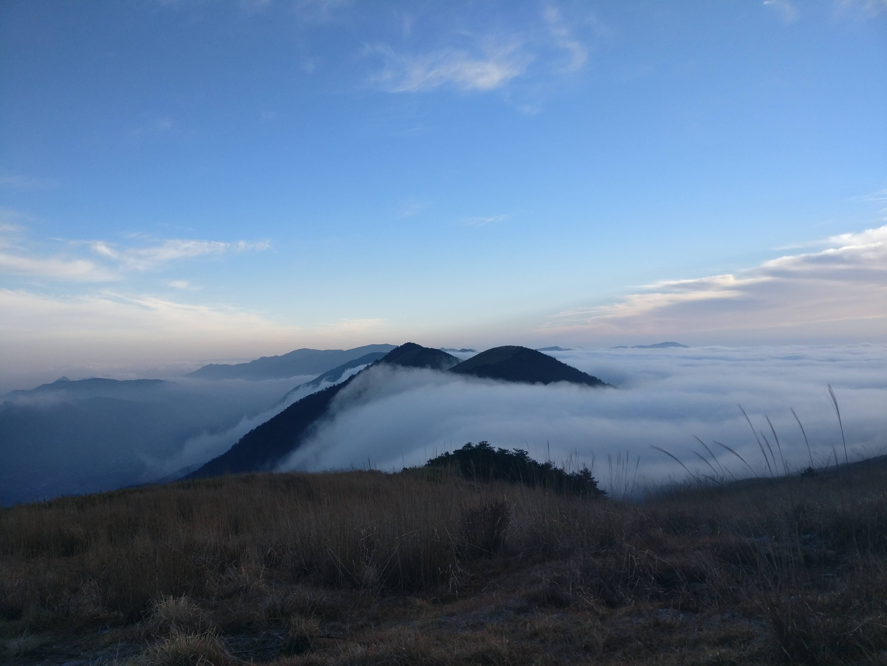

发信人: FANSKY (太阳盾), 信区: outdoor
标 题: 冬训三尖领队总结-sdx
发信站: 饮水思源 (2016年12月19日14:20:42 星期一)
第一次带没有向导的干事线，先声明本次线路不能作为以后三尖带线的参考，因为这次全队阵容比较强一些，比预计的时间提前很长时间到达营地，途中虽有强度较大的爬升与路程，但同时由于是小队伍线路，并且是男生居多，大家体能以及管理的方便程度上和会员线或者大队伍有所不同，谨慎参考信息。
首先线路准备期间，提前两周与向导联系好，沟通好住宿问题以及最后落脚点位置等，防止出现时间冲突的问题，虽然很少出线这种问题，这次联系司机师傅联系了好几次，身心俱疲，中途一度想取消，又于心不忍，后计师傅推荐拼车，婉拒。起先是初定35人的线路，然后报名后的结果并不理想，最终有17人，然后老人居多，陆陆续续退出了三四个老人，然后又退出了一两个新人，变成了11人，五个新人，六个老人，不得不说，本届冬训线路和上一届的冬训线路完全是两个状态，人数太少进而产生了一些问题，一个是线路的交通问题，11人的话包车就是包一个小车了，但是延糜Ω貌换峒跎俣嗌伲预算就需要算的很精细，其次是带线过程，最终这11人全是男生（文lady应该没什么意见吧~~）可能会比预想的要好走一些，事实上也确实如此。天气，山上的天气一起很玄学，两周前的天气预报是一天下雨，一天晴天，随后变成晴天，多云，山上也是晴天多云，不过是我们走在云里面，加上这么冷的季节，冬训线的效果应该可以说达到了。
考虑的因素：
1三尖需要准备多条下撤线路，不过这个线路本是想准备走完的，希望大家状态也好一些，以体侧的形式筛选了足够优秀的队员，下撤路线第一天两条，第二天一条，参考之前协会带线的下撤路线即可
2 气温较低
3 对干事的要求，本次线路着重提出来是冬训线，对干事有 时间意识，低温下的营地技巧，执行力等的考验
4 体侧，嗯，作为领队在体侧的时候成绩这么差，额，实属不该。。大二的时候记得还跑进了20min 。。（全队体能这么好，给我极大的信心。）
5 准备会，会上大家都比较认真，提问考虑也很全面，小插曲是我建议大家带羽绒，自己没有带，怕水温过低或者冻住的可以带保温杯。
6发装备，虽然当时提示了发厚睡袋，但是貌似大多数人还都是薄的，领队组的装备我没有检查好，，，，少个炉头不说，唯一的炉头还是坏的，辛亏文lady带了一个自己的，不然山上用火就很尴尬了。
走线：
人少走起来就是爽啊~~~~~
六点庙门集合 ，除了个别大佬迟到时间稍微长一点，欠几百个俯卧撑。。大家都提前到了，背负也都还可以，严格意义上讲有点少许腐败，但个人感觉无伤大雅，提前半小时出发，六点半拉走，中途一次服务区，在小车上直接开始自我介绍，大家都很放得开嘛。11点到向导家，上次清凉峰我带线也是这个向导，当时都没有到达，凌晨两点停在高速服务区，这次竟然提前这么长时间，以后十一线路可以考虑一下路线或者时间问题了。。
到向导家10min之内迅速睡觉，不得不说，这些大部分都没有出过线路的干事们表现超出我预期很多。明天五点起床，吃饭，上车，出发到攀登地点。出发前，老乡告诉我几个很容易走错的路线，和我准备的情况差不多，更加具体，老乡人很不错
线路过程没有什么太多有趣的事情，岔路并没有很多吧，航迹上直接一看还是很明显的，很直观的反应一个是太子尖的云海真的很震撼，风景真的很美，有武功山的感觉，第二是走进云中后在山脊上感觉会有些冷，加上树上有早上的露水，沾在裤子上风一吹那感觉还是很刺激的。。。
与压队商量翻过绝望坡后找了一个避风的地方吃午饭，随后看来下午的路程断言两个小时内走完，那就是下午两点半，实际上还早一些。到营地后，我们是第一个重装到达营地的队伍，选个不错的扎营地点，营地直接提供热水，烧水可以直接往他们要热水，不过还是要珍惜热水，到各组看大家状态都还很好，明天继续童公尖。
当晚与压队商量让大家提前起床，但是当晚气温已经很低，领队组做完饭，我就直接进帐篷打算休息了，打算八点出来再看一次，但是八点的时候天气已经很冷，压队也处理完了事情，就没有在出去，睡了个长长的觉，不过必须要说的是，虽然没有风，但还是要考虑山上的潮气，在树下扎营直接就是一晚上都在下雨，冬训线的冷还是在野外体现到了极致，黑冰B400加上穿抓绒还是很冷的。
第二天一路上也没什么好说的，就是走到浮桥村后和司机联系，司机晚到10min左右吧，腐败（山下吃腐败聚划算），回上海
走线中反应的几个问题
1， 虽说严禁腐败，还是有个别组出现了一丝腐败的迹象，带了些重而不划算的食物，作为干事，要多加注意。
2， 拔营太慢，当初我上次冬训线的时候，hemind和我说，对于新人来讲，拔营永远是一个噩梦，冬天尤为严重，这次定的两个小时拔营，显然不够，最后又拖延了45分钟，冬天天气脚冷，大家反应速度较慢，还有就是懒
3， 紧跟队伍，不要与大队伍分开走线一开始，有个司机的朋友，一个户外经验较丰富的人，一开始想和我们一起走，与压队商量后，让他走在压队后面，而后在一次休息中，自己走在前面，离开队伍，想一天重穿，后来下山遇到，得知手机没电迷路，后遇到老乡下山。
4， 速度带的有点快，第一天怕走夜路，第二天怕很晚下山，由此而来导致提前两小时到营地，提前两小时下山。
5， 山上气温在太阳没有下山的时候还是可以接受的，黑天了之后就很冷了，上山时，太子尖部分区域有结冰现象，山上营地没有。
6， 走错两个小岔路，不过幸运的是我及时发现，返回到正确路上也没花几分钟，航迹还是很精确的，本人记录的航迹并不精确，可能是设置原因，参考价值不如原来航迹，不贴了。
总的来说，走的还是很成功的，大家体能也都比较好，达到了冬训线锻炼干事的目的。
拍了很多照片，但是不知道为什么放不上来，只能放上来这几个0.0
 screen.width - 200){this.width = screen.width - 200}">
 screen.width - 200){this.width = screen.width - 200}">
 screen.width - 200){this.width = screen.width - 200}">
附上队记记录
三尖线路队记
领队组：孙东晓（领队）谢礼（副领队）陈震昊（押队）
第一小组：姚宇轩（组长）郑家庆（队医）文颖（斥候）石书欣（队记）
第二小组：郑怜悯（组长）吴舒旸（斥候）栗高宇 李轶翀
周五
18.43
拍照，整装预备，庙门上车出发
21.24
临安服务区休息
预计45分上车
21.46
重新出发
21.51到22.34
开始线路破冰
22.51
到旅馆下车
11.06
准备就寝
周六
5.00
起床
5.20-5.54
吃早饭
馒头，粥，榨菜，鸡蛋
6.00
上车出发
6.18
通过大雾山路
司机低速行驶
6.30
出雾
下车整理，准备出发
回头刚才在云海里
押队疑似踩到大便
6.51
拍完照，正式开始徒步
7.06
更衣五分钟
7.25
登顶太子尖
7.44
到达倒下的铁塔
穿进云瀑布
8.03
穿出云瀑布
9.02
到达上马啸
9.22
休息五分种
9.41
到达花石岗
10.16
休息五分钟
中马啸下马啸之间
10.31
到达3小溪营地
10.52
绝望坡前休息10分钟
11.08
开始攀登绝望坡
11.37
到达绝望坡终点
11.50
休息吃午饭
12.16
上包出发
12.34
走错一条路，稍作折返
1247
更衣5分钟
14.19
到营地
开始搭帐篷
14.30
帐篷竣工
16.00
生活做饭吃饭
领队组炉头坏了，未带备用炉头，问第一组借了一个
18.00
吃好饭，准备休息
19.00
基本都进帐篷了
周日
5.00起床
5.30
烧水
6.10
领队组快吃完
第一组烧开第一锅水
第二组快烧开第一锅水
6.45
领队来催，第一组告急
因第一组拖延，出发时间延迟至7.30
7.39准备出发
7.45出发
8.28大平台休息换衣服9
大牛粪平台903
下坡再上坡，到第二个平坡19.31
9.46
登顶童工尖
9.54
下坡前休息五分钟
10.35
休息10分钟，下降五分之二
10.57
到台阶路
11.30
到达村落东塔村，徒步正式结束
12.15
接送车辆到达，上车
13.10
到达酒店吃饭
13.49吃完饭上车
1542德清服务站
16.03
从服务区出发
16.10
开始线路总结
17.00
到上海收费站
17.30
线路总结结束
骑车下达剑川路高速路口
17.43
到达庙门
----------------------------------------------------------------------------
附上准备线路的资料
---------------------------------------优雅的分割线-------------------------
时间：2016.12.9-2016.12.11
七点庙门出发（六点集合）
时间意识 防水 强度 温度（零下）
地点浙江临安
下雨的话，安排有冲锋衣的人靠前走，帮后面挡一下水
车上总结直接开始，上次等了半小时开始后还是晚了
向导：上次带清凉峰请的向导，人还不错，和我吹牛说，三尖最早是他带出来的，权当真的吧~
住宿
第一晚：
按照往年的经验来看，太子尖山腰当不太好，住在向导家，但是第二天要走一段路。
线路：太子尖山腰-太子尖（海拔1558米）——上马啸——中马啸（1449米）——花石冈（1485米）——下马啸（1152米）——百丈岭（1334米）（第一天营地）——大牛粪（1598米）——童公尖（1558米）——浮桥村
行程：
【日程安排】：
第零天：
19:00 坐大巴到山腰，中途破冰。
23:00 到山腰，扎营
第一天：
5:00起床，做饭，拔营
这是公路边的入口直接上去可到达太子尖
7:00 准时出发，奔向第一尖。30-45分钟左右休息一次（视队员情况进行不下包五分钟和下包十分钟进行） 较长的上坡为20分钟休息一次
7:40 到达太子尖，休息5分钟。(合影)
太子尖之后的很长一段路程里，都是行走在山脊上的。强度不大，从此走在山脊上，右边清凉诸峰云雾缥缈，左边村舍俨然，从太子尖顶顺山脊前行约十分钟，在一哑口处会遇一极易走错的岔路，此时一定要注意方向，向正东的山脊是往马啸方向，向东北方向的山脊才是往童公尖的正确路线。在此一定要用指南针或海拔表确定方位。上了东北的山脊前行大约半小时便到海拔1500米，是一块绝佳的观景台。到此处便可清楚的看见两边山脚的村落，可以此来辨别路线。从观景台会一直下行到海拔1200米的大块高山草甸，再往前翻过两座1300米的小岭又到一大块草甸，一条石板路峥缭谏郊股希这里便是上马啸岭，左边古道可下山到庄下，右边古道可下到马啸
8:40到上马啸。
继续往前翻过二个山岭便到中马啸岭，是一低凹处，一条土路横跨山脊，左边下山到邵家，右边下山到马啸的庵后。
注：此段路面岔路较多。总体来说，应沿山脊向上走，不要向下，山脊坡度平缓，过草甸后遇到岔路，原则上向右。
10:00 到中马啸 去年在花石岩不到的地方午餐（大家比较累的话可以。）
从中马啸岭沿东北方向上山脊是往花石岩的路，此行的目标路线是往百丈岭、童公尖方向，路线长，跨越无数村庄，花石岩（1485M）有两大明显特征：离顶峰50米处是一大哑口，大块草坪中孤伶伶的立一棵松树，从几公里外便可看到；顶峰上立一三角测绘标石，上有省公安厅、省测绘局、省军区字样。花石岩哑口往东有一山路可继续前往避风岭和百丈岭，左边是水渠，路右边有一巨石，巨石右手有一条很陡很小的路，有点险，下到谷底就是白马崖景区的九天瀑，顺溪走出景区就是下坪村。花石岩顶峰下的哑口也是一处绝好的宿营地，大片的草地，不到20米远就有水源。
11:00到花石岩路餐，欣赏美景的同时尽量休息,因为下午还有很多路要走。
过了花石岩之后是一段下坡后到达水源地方
11:35 到下马啸吃饭，吃完后，开始爬坡
绝望坡：一坡到顶，本以为希望来了，结果却发现自己站的地方原来只是另一坡的起点。
13:40 到避风岭
16:00 到达百丈岭扎营。从中午到营地的路程较长，时间紧凑，走的快，要有思想准备，在此路段要求大家能服从安排同时在自己有能力的前提下尽量帮助有困难的队友。
17:00 做饭
20:00 可以的话，篝火点起来，累了一天有热活暖暖身子还是很有帮助的,有兴趣的可以弄点节目玩玩。
21:00 回帐睡觉。
第二天：
05:30 准时起床,大家有一个小时的时间收拾营地和早餐。（强调时间意识）
07:30 准时出发，继续三尖之漫漫长路。
08:30 到达大牛屎，这是一个牧场，很好的草坡，也许会看到牛群。
09:30 雷达站废墟
10:30 登顶童公尖简单路餐补充能量，马上下山。
12:40 到达浮桥。坐车去腐败咯
此部分参考袁航准备与实际线路走的情况（他们是会员线）
路况：泥地，下雨后尤其泥泞。（嘱咐好队员的防水问题）
第二天下降比较陡，之前有屁降的，很担心下雨后第二天的线路能不能走，不行就直接走下撤路线
强度、难度和风险点：
上坡：其实强度并不大的上坡，对很多第一次出现，欠缺体能的妹子来说确实是挑战。分包次数多的过分了。再加上恶劣的天气，士气并不高涨。
无论如何，出发前应当对队员的体能有所考量。
下坡：土坡泥泞湿滑，下坡并不轻松，走的很慢，主要是缺乏行走技巧所致，这也强求不得。
水源： 中午在花石岩有水源。晚上在百丈岭也有水源，也有打热水
下撤路线
第一天1、 若天气状况恶劣，组员状况疲惫且14:00未到达花石岩，则直接就近下撤。两条下撤线路。走南边下到日升村，路陡峭但行程短；走北边下到太平村，路平坦但行程长。
第二天2、 若第二天早上天气状况恶劣，组员状况疲惫，则放弃登顶童公尖，直接从营地下撤。两条下撤线路。走东边下到双石村，走西边下撤到太平村。
往年采取下撤太平村的下撤路线
阅读领队总结后：
1、在召集帖中将特别需要注意的点直接开门见山放在最前面，如果觉得这样影响召集帖的吸引力，则需将这些点在文中字体加大，加粗，斜体，总之，要醒目，要让看到这篇召集帖的人不会漏掉这些点，一下是几点我个人认为比较重要的点：A在出行人员的选择上，领队有绝对权力，领队可根据是否干事，会员，户外经验，报名顺序，男女比例，体能，甚至是个人喜好等等综合因素决定出行人员；B关于已确定的出行人员退出活动的费用退还问题召集帖中应明确；C不签署知情同意书者，不告知家长并获同意者，不买保险者，不可出行；D关于体测，注明；
2、建议出发前的队伍召集时间早于大巴到达约一个小时（总有人会迟到，总有人会忘东西），这样有充足的时间让领队组去检查各组的背包重量是否合适，打包方式是否合适；
3、确保每组至少两人能够熟练的搭帐篷，所有人能够正确上下包
-----------------------------------------另外一个分割线----------------
--
※ 来源:·饮水思源 bbs.sjtu.edu.cn·[FROM: 59.78.15.182]
|